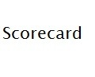

The year was 1988. After 8 years of Reagan, his Vice President George H.W. Bush had won the nomination but was 17 points behind in the polls to Democrat Michael Dukakis. That was until the Willie Horton attack ads began to air. The first one read like this:
Bush and Dukakis on crime.
Bush supports the death penalty for first degree murderers.
Dukakis not only opposed the death penalty, he allowed first degree murderers to have weekend passes from prison
One was Willie Horton who murdered a boy in a robbery, stabbing him 19 times
Despite a life sentence, Horton received 10 weekend passes from prison
Horton fled, kidnapped a young couple, stabbing the man, and repeatedly raping his girlfriend
Weekend prison passes. Dukakis on crime.
A second ad, known as the revolving door ad, read like this:
As governor Michael Dukakis vetoed mandatory sentences for drug dealers.
He vetoed the death penalty.
His revolving door prison policy gave weekend furloughs to first degree murderers not eligible for parole
While out, many committed other crimes like kidnapping and rape, and many are still at large
Now Michael Dukakis wants to do for America what he’s done for Massachusetts
America can’t afford that risk
In both cases, the text of the ad does not do justice to the impact these ads had. On the surface reading the text, it looks like the Bush campaign had a disagreement with the policy of allowing criminals to have weekend passes. They were trying to say “we’re tougher on criminals” etc. However, there’s no way these ads could have erased a 17 point lead in the polls based on a difference in prison policy.
These ads cut right to the heart of the most racist fears Americans have. The first ad showed Willie Horton’s angry, scowling face with the narrator saying the words kidnapped, stabbing, and raping. Willie Horton, of course, is a black man. The second ad didn’t mention Willie Horton by name, but cleverly shows a line of prisoners walking out of prison, and the only prisoner that looks up at the camera is a black man. Just like the daisy girl ad in 1964, people had a visceral reaction as the ads were repeated over and over by the news media giving them way more free air time than the Bush campaign could ever have hoped for. In 1964, the reaction was a vote for Goldwater meant we’d be in a nuclear war. In 1988, a vote for Dukakis meant black killers and rapists would be running rampant on the streets of my home town.
Although the Bush campaign denied responsibility for these ads, it was clear campaign manager Lee Atwater was behind the Willie Horton ads. Atwater had a reputation for dirty politics and this was the dirtiest trick of all. It didn’t matter that the ads were criticized for the racism they brought out. People reacted to it out of fear and it didn’t matter who would make a better president. Dukakis didn’t do himself any favors. As the ads were played over and over, Dukakis tried to stay above the fray and ignored the ads until his 17 point lead had turned into a deficit. Bush was elected rather easily.
This type of dirty manipulative campaign ads have now become the norm. The public hates negative ads. They deplore candidates twisting facts and lying about their opponents. They especially hate when one candidate uses a particularly emotional issue to twist the facts and scar their opponent. But it works.
Moral Compass Scorecard
George H W Bush |
D |
I’m sure it wasn’t his idea to run the Willie Horton ads, but he went along with it. |
Michael Dukakis |
B |
Perhaps Dukakis should get a better grade for taking the high road. |
Lee Atwater |
F |
Atwater would do anything to win an election for his candidate, and with the Willie Horton ads he found a way to appeal to the public’s worst racist qualities. |
Willie Horton |
F |
Horton was a violent criminal who no doubt had no morals whatsoever. Is it even relevant to the issue? Atwater would have found another violent black criminal to hang on Dukakis. |
American Public |
D |
Shame on the public for falling for this racist manipulation. |
 |
Introduction |
|
|  | Scorecard My scorecard on the Willie Horton ads. |
|
 |
Video, 30 seconds The original Willie Horton attack ad. |
|
 |
Video, 2 minutes 56 seconds The revolving door video with commentary from Michael Dukakis, Sam Donaldson, and others |
|
 |
Video, 2 minutes 56 seconds Boogie Man - The Lee Atwater Story |
|
 |
Political Cartoon Newt Race Baits by John Cole |
|
| Links and source material for this topic | ||